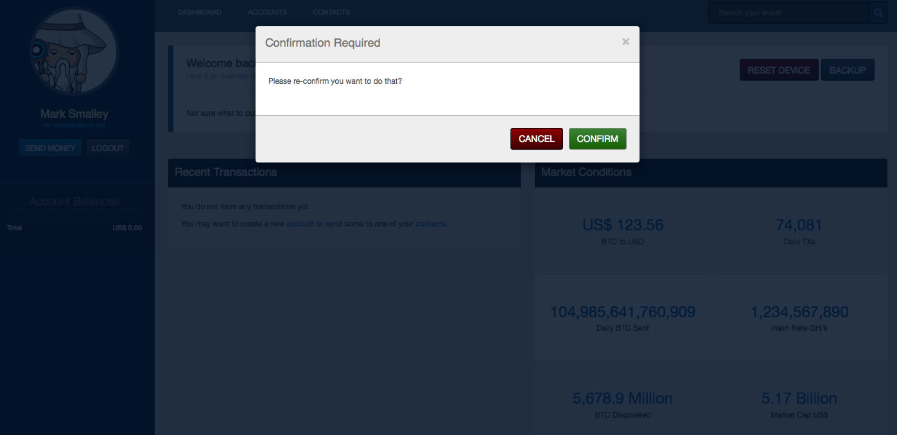

Core Functions
Core Functions & Variables
This is often called by first setting var bs = $.fn.blockstrap;.
You can then use the following functions once core has been fully initialized:
bs.core.ago(time)bs.core.add_action(hook, key, bs_module, bs_function, vars)bs.core.add_commas(num)bs.core.apply_actions(hook)bs.core.boot(bootstrap, key, html, index, callback)bs.core.bootstrap(index, bootstrap, callback)bs.core.buttons()bs.core.confirm(title, content, confirmed_callback, cancel_callback)bs.core.css(callback, files)bs.core.defaults()bs.core.filter(data)bs.core.forms()bs.core.get(file, extension, callback, skip)bs.core.image(input, callback)bs.core.init()bs.core.less(callback)bs.core.loaded()bs.core.loader(state)bs.core.modal(title, content, id)bs.core.modals(action)bs.core.nav(slug)bs.core.option(key, default_value)bs.core.page()bs.core.patch(version, callback)bs.core.plugins(index, plugins, callback)bs.core.print(contents)bs.core.publicize(callback)bs.core.ready()bs.core.refresh(callback, slug)bs.core.reset(reload)bs.core.resize(delay)bs.core.resized(delay)bs.core.salt(modules, callback, salt)bs.core.settings(element)bs.core.string_to_array(string)bs.core.stringed(styles)bs.core.table()bs.core.test_results(expected, given, index, total, title, api_service, chain_count, chain_total)bs.core.test_results_table(results)bs.core.tests(run)bs.core.txt(input, callback)bs.core.upgrade(saved_version, this_version, refresh, callback)
bs.core.ago(time) - back to top
This function takes a timestamp (in seconds) and converts it into a written phrase, such as one minute ago. If your time is set to milliseconds, convert it by one thousand (1,000) before running it through the function. Multi-lingual options will be available before reaching version 1.0.
bs.core.add_action(hook, key, bs_module, bs_function, vars) - back to top
This function allows you to add custom functionality into critical core processes without needing to edit core files. It works in a way very similar to the add and apply_actions functions found in WordPress. The hook variable defines which event you would like to tie your action to. The current hooks available within core include:
init- called at the start of $.fn.blockstrap.core.initinit_callback- called when the core.init function is completedready- called at the end of $.fn.blockstrap.core.ready
The key is used as a unique identifier for each function you would like to attach to the hook.
The bs_module and bs_function variables allow you to define which function from which module you would like to run at the event, whereas the vars variable allows you to attach additional information to the function being called.
An example of this can be seen in /plugins/markets/markets.js as follows:
var conditions = 'something-important-to-pass-on';
$.fn.blockstrap.core.add_action(
'init',
'market_updates',
'plugins.markets',
'update',
conditions
);It is worth noting that calling regular modules does not require dot notation, but should you wish to call a plugin function you need to add the word plugin followed by a dot and then the plugin name in order to access its functions (as seen on line 5 above).
bs.core.add_commas(num) - back to top
This function takes an integer and returns a string with comma formatting as follows:
var price = $.fn.blockstrap.core.add_commas(12345);
// price = '12,345'bs.core.apply_actions(hook) - back to top
This function attempts to call all the actions added the relevant hook.
bs.core.boot(bootstrap, key, html, index, callback) - back to top
This function loads each select Bootstrap component into $.fn.blockstrap.snippets. Once there, you could for example then get the relevant HTML Mustache template for lists by simply calling $.fn.blockstrp.snippets['lists'], which would contain the following HTML:
{{#objects}}
<ul id="{{id}}" class="list-group">
{{#items}}
{{#href}}
<a href="{{href}}">
<li class="list-group-item {{css}}">
<div class="list-item-content">
{{{html}}}
</div>
{{#badge}}
<span class="badge">{{badge}}</span>
{{/badge}}
</li>
</a>
{{/href}}
{{^href}}
<li class="list-group-item {{css}}">
<div class="list-item-content">
{{{html}}}
</div>
{{#buttons}}
<a
href="{{href}}"
class="btn {{css}}"
{{#attributes}}
{{key}}="{{value}}"
{{/attributes}}
>
{{text}}
</a>
{{/buttons}}
</li>
{{/href}}
{{/items}}
{{^items}}
<li class="list-group-item {{css}}">
{{{missing}}}
</li>
{{/items}}
</ul>
{{/objects}}This can then be merged with data using the $.fn.blockstrap.templates.process function to create fully-rendered content as follows:
var html = $.fn.blockstrap.snippets['lists'];
var data = {
objects = [
{
id: 'list-id',
items: [
{
text: 'List Content'
}
]
}
]
};
var page_contents = Mustache.render(html, data);The page_contents variable would then contain the following HTML:
<ul id="list-id">
<li>List Content</li>
</ul>bs.core.bootstrap(index, bootstrap, callback) - back to top
This function cycles through an array to load the necessary components using $.fn.blockstrap.core.boot().
bs.core.buttons(classes, ids) - back to top
If no classes or IDs are passed into the function (as seen when loaded automatically during initialization) this function will check the configuration settings to determine which button classes and IDs to apply the assigned functions to. If arrays of classes and IDs are passed into the function, it will initiative the newly assigned buttons.
If the classes array contianed the following:
{
"classes": [
"print",
"qr"
]
}This would try to assign the $.fn.blocstrap.buttons.print and $.fn.blockstrap.buttons.qr functions to the .btn-print and .btn-qr elements. Please note that classes that you wish to auto assign need to be prefixed with btn. If it could not find the necessary functionality within the buttons module it would attempt to seek out the same functions from $.fn.blockstrap.theme.buttons.print and $.fn.blockstrap.theme.buttons.qr before cancelling its self assignment.
In the case of IDs, dashes in IDs get converted to underscores, so the following array:
{
"ids": [
"submit-payment"
]
}Would try to assign the submit_payment function to an element with an ID of submit-payment.
bs.core.confirm(title, content, confirmed_callback, cancel_callback) - back to top
This function opens a modal window that mimics the functionality of a confirmation dialog, where the title and content variables define the contents of the modal window. The confirmed_callback and cancel_callback variables should be assigned functions that run according to the user's selection.
bs.core.css(callback, files) - back to top
This function cycles through the configured array of files and adds them to the header as available. It will try to search the core blockstrap/css/ folder if it is first unable to find them within your active theme CSS folder (themes/<active-theme>/css/). Once it has loaded all of the CSS files, it will then attempt to run the callback variable (which should be a function). If you include an array of files it will instead load these rather than those configured, which by default, include:
{
"css": [
"less",
"font-awesome"
]
}bs.core.defaults() - back to top
This function is auto-loaded by core at run-time and should not be run again. It checks for whether the data and security modules are included and if not, then provides the following skeleton functions (that prevent known errors from other modules):
- $.fn.blockstrap.data.find
- $.fn.blockstrap.data.save
- $.fn.blockstrap.security.logged_in
These skeleton functions do nothing other than performing the associated callbacks.
Ideally, this function should not need to exist, and by version 1.0, it will either be removed, or be more configurable.
bs.core.filter(data) - back to top
This function reccursively loops through data arrays in search of the func keyword, from which it will then assign the necessary function from the filters module ($.fn.blockstrap.modules.filters). For example and as seen within themes/default/data/index.json:
{
"name": {
"func": "get",
"collection": "keys",
"key": "your_name"
}
}As seen on line 3 above, when the func is used as a key it's value becomes the filter function called. Each filter function has its own requirements. In the case of $.fn.blockstrap.filters.get a collection and key is required, which is then used in conjunction with $.fn.blockstrap.data.find in order to replace the value of the name object with the results collected from the find.
bs.core.forms() - back to top
This is a horrid function and will be replaced very shortly with something much better. We do apologise for anyone brave enough to look through the source and see just how ugly this side-step became. It currently applies much of the fancy form magic used with the default theme, yet somehow managed to find its way into core. Again, sorry!
bs.core.get(file, extension, callback, skip) - back to top
This function is used to collect DATA.json files and TEMPLATE.html files. Assuming the skip variable has not been defined, it will use the file.extension variables to construct a file name that is then retrieved via AJAX, upon completing which the callback function is called.
bs.core.image(input, callback) - back to top
This function takes an input with type file and then performs the necessary callback function when it is used to upload an image file.
bs.core.init() - back to top
This function is the final function called at the end of the Plugin Construct. It is within this function that the content for the relevant page gets rendered. This function also contains two action hooks and flows as follows:
- Apply
initActions - Perform
$.fn.blockstrap.core.publicize - If not logged-in, show
blockstrap/html/login.htmlcontent - Else then continue with the following tasks:
- if Accounts Module activated, run
accounts.poll() - Render Content Relevant to Slugs
- Run Tests (if configured to do so)
- Once Page Rendered then continue with the following:
- Initiate DOM Related Functions
- Apply
init_callbackActions
bs.core.less(callback) - back to top
This function should (in most cases) be used when developing new applications as it allows you to use .less files live within the browser. The results can be cached locally so that consecutive page loads do not require you to load each individual less file, but when you have a complete suite of individual less files (such as when loading the default less files) it can take quite some time during that initial loading sequence, but is nonetheless very useful when developing. If used when developing, the final results can be locked-down before going live and served as a compiled CSS file instead.
This function should not be called directly and is currently quite unstable with frustrating caching complexities!
Currently, it is called when set within your core configuration files as follows:
{
"less": true
}If set to true the following base LESS file will be used as a starting point themes/<active-theme>/less/blockstrap.less if available.
The default Theme's LESS file has the following starting point:
// Import Core
@import "../../../blockstrap/bootstrap/less/bootstrap.less";
// Core variables and mixins
@import "variables.less";
@import "mixins.less";
// Switches
@import "switch/bootstrap-switch.less";
// Core App
@import "app.less";
// Responsiveness should be last
@import "responsiveness.less";As you can see from line 2 above, the default theme will also load each individual bootstrap component before loading its own theme-related files.
Again, this can be both useful and annoying. Good luck!
bs.core.loaded() - back to top
This function is part of the final call from the Plugin Construct.
It is used internally to store the configured theme_name before it then calls the core.defaults function prior to core.init.
bs.core.loader(state) - back to top
If called without a defined state a loading CSS class will either be added or removed to the application's parent container. If a state such as open or close is defined, smoother animation will be used to transist between the two states.
bs.core.modal(title, content, id) - back to top
This function is used to activate the Bootstrap Modal component. The title and content define what to display within the modal window, whereas the id variable is used to open a specific modal window with pre-defined content as seen within the following section inside themes/default/data/index.json:
{
"modals": {
"func": "bootstrap",
"type": "modals",
"objects": [
{
"id": "default",
"title": "Title",
"body": "<p>Content.</p>",
"close": "Cancel"
},
{
"id": "confirm",
"title": "Confirmation Required",
"body": "<p>Please re-confirm you want to do that?</p>",
"close": "Cancel",
"footer": true,
"actions": [
{
"text": "Confirm",
"css": "btn-success"
}
]
}
}
}
}This would output the following HTML:
<div class="modal fade " id="default-modal">
<div class="modal-dialog">
<div class="modal-content">
<div class="modal-header">
<button type="button" class="close" data-dismiss="modal">
<span aria-hidden="true">×</span>
<span class="sr-only">Close</span>
</button>
<h4 class="modal-title">Title</h4>
</div>
<div class="modal-body no-footer">
<p>Content.</p>
</div>
</div>
</div>
</div>
<div class="modal fade " id="confirm-modal">
<div class="modal-dialog">
<div class="modal-content">
<div class="modal-header">
<button type="button" class="close" data-dismiss="modal">
<span aria-hidden="true">×</span>
<span class="sr-only">Close</span>
</button>
<h4 class="modal-title">Confirmation Required</h4>
</div>
<div class="modal-body">
<p>Please re-confirm you want to do that?</p>
</div>
<div class="modal-footer">
<button type="button" class="btn btn-danger" data-dismiss="modal">Cancel</button>
<button type="button" class="btn btn-success">Confirm</button>
</div>
</div>
</div>
</div>With these two modals added to the DOM, the $.fn.blockstrap.core.modal(false, false, 'confirm') would result in the following:

bs.core.modals(action) - back to top
This function is a lot like core.forms in that it too is a bit of a mess and should hopefully be removed and or vastly improved by the time we reach version 1.0. Only the brave would dare spend the time getting their head around this one, but it basically runs a bunch of functions on potential modal content used by other modules and functions and should never be called directly so is probably worth forgetting (for now).
Howerver, there is one use it has in the form of the available action variable. If set to close_all it will close any and all open modal windows.
bs.core.nav(slug) - back to top
This function should be called when page content changes or loads and will add the active CSS class to the configured navigation_id and mobile_nav_id elements. If the slug equals $.fn.blockstrap.settings.page_base the slug will be converted to $.fn.blockstrap.settings.slug_base.
bs.core.option(key, default_value) - back to top
This function returns the appropriate option as stored in localStorage. The appropriate options are defined during setup with the data-setup-type attributes used within the setup form, and by default include:
- api_service
- your_photo
- photo_salt
- your_question
- wallet_question
- wallet_choice
The key variable defines which option you would like to search for whilst the default_value provides an optional value to return if the desired option is not available.
bs.core.page() - back to top
This function returns the current page slug.
bs.core.patch(version, callback) - back to top
This function loads and initiates the requested patch. Patches are used to handle upgrade paths between specific versions without needing to store or serve the upgraded code from core. Patches currently need to be served from /blockstrap/patches/ with each patch contained within its own folder as follows:
- index.html
- blockstrap
- css
- js
- patches
- 0501
- patch-0501.js
- 0502
- patch-0502.js
- 0501
Please note that the index.html file and css and js folders are shown above for context only.
We use folders in case patches require external files.
The patch itself follows a style similar to plugins, requiring this minimum functionality:
(function($)
{
var patch0501 = {};
patch0501.init = function(callback)
{
// ADD UPGRADE CODE HERE
}
// MERGE THE NEW FUNCTIONS WITH CORE
$.extend(true, $.fn.blockstrap.patches, {patch0501:patch0501});
})
(jQuery);bs.core.plugins(index, plugins, callback) - back to top
This function is used to store and serve plugins from cache. It cycles through the supplied plugins array and initiates the callback function upon completion.
bs.core.print(contents) - back to top
This function opens a new print-friendly window containing the contents provided.
bs.core.publicize(callback) - back to top
This function determines and sets the current user's role and then performs the provided callback function.
bs.core.ready() - back to top
This function should be called each time new content has been added to the DOM and in doing so performs the following functions:
$.fn.blockstrap.core.table()$.fn.blockstrap.core.forms()$.fn.blockstrap.core.page()$.fn.blockstrap.core.nav()
It also attempts to load the following functions if the relevant modules are available:
- $.fn.blockstrap.theme.new
- $.fn.blockstrap.buttons.new
bs.core.refresh(callback, slug) - back to top
This function will attempt to (re)-render the current page content and then peform the provided callback function. If however an optional slug variable is provided it will instead attempt to specifically load the relevant content related to the slug.
bs.core.reset(reload) - back to top
This function will clear all the related records from localStorage and if reload is set to true will then refresh the page.
bs.core.resize(delay) - back to top
This function is a timeout wrapper for core.resized that allows the delay to be set as a variable.
bs.core.resized(delay) - back to top
This function is called when new content is added to the DOM and the window is then subsequnetly resized. It currently then only calls:
This function will be more configurable before reaching version 1.0.
bs.core.salt(modules, callback, salt) - back to top
This function is used to generate the device salt. It takes a modules object variable and cycles through each, compounding the encryption as it goes and performing the necessary callback function upon completion. If an optional salt is included, it will use that as the initial starting point for its encryption, rather than using the internally set application ID ($.fn.blockstrap.settings.id).
bs.core.settings(element) - back to top
This function is called from within the core.init function and transform the various data-attributes attached tothe provided element into configuration settings.
bs.core.string_to_array(string) - back to top
This function is used by core.settings to convert strings from data-attributes constructed as follows:
<div data-plugins="[markets, test]"></div>Into the following array:
{
plugins: [
markets,
test
]
}The string must start with [ and end with ] whislt using the ', ' delimeter.
bs.core.stringed(styles) - back to top
This function is used internally by the Styles Module to convert strings to CSS attributes.
bs.core.table() - back to top
This function is auto-loaded when new content is added to the DOM. It searches for tables with the data-tables CSS class:
<table class="data-table"></table>It will automatically apply the DateTables Plugin to any tables with this class.
It then uses these additional data attributes as advanced DataTables options:
<table
class="data-table"
data-search=""
data-dom=""
data-order=""
data-order-by=""
></table>bs.core.test_results(expected, given, index, total, title, api_service, chain_count, chain_total) - back to top
This function is used to display the results related to core.tests and should not be called directly.
bs.core.test_results_table(results) - back to top
This function is also used to display the results related to core.tests and should not be called directly.
bs.core.tests(run) - back to top
This function should not be called directly, as it is automatically called if configured to do so with tests: true.
These tests are strictly used in conjunction with the API Module with one example showing requirements as follows:
{
"tests": {
"api": {
"address": {
"request": "1Nz5RqevRodefPyGVB8EpdwSEGS4Ax2f1k",
"results": {
"address": "1Nz5RqevRodefPyGVB8EpdwSEGS4Ax2f1k",
"balance": 10019000,
"blockchain": "btc",
"hash": "f1260c3cd86ecc03ce460c303ec0e8006e32273d",
"received": 10019000,
"tx_count": 2
}
}
}
}
}Another way to run the tests without changing the configuration is visiting tests.html instead of index.html.
bs.core.txt(input, callback) - back to top
This function takes an input with type file and then performs the necessary callback function when it is used to upload a .txt file.
bs.core.upgrade(saved_version, this_version, refresh, callback) - back to top
This function is used to manage the logic behind which upgrade paths lead to which patches being loaded.